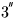
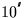
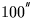
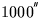
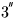
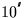
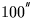
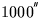

Next: SLA_PRECES - Precession
Up: SUBPROGRAM SPECIFICATIONS
Previous: SLA_PREBN - Precession Matrix (FK4)
- ACTION:
- Form the matrix of precession between two epochs (IAU 1976, FK5).
- CALL:
- CALL sla_PREC (EP0, EP1, RMATP)
- GIVEN:
-
| EP0 |
D |
beginning epoch |
|---|
| EP1 |
D |
ending epoch |
- RETURNED:
-
| RMATP |
D(3,3) |
precession matrix |
|---|
- NOTES:
- 1.
- The epochs are TDB Julian epochs.
- 2.
- The matrix is in the sense:
v1 = M v0
v0
where v1 is the star vector relative to the
mean equator and equinox of epoch EP1, M is the
 matrix RMATP and
v0 is the star vector relative to the
mean equator and equinox of epoch EP0.
matrix RMATP and
v0 is the star vector relative to the
mean equator and equinox of epoch EP0.
- 3.
- Though the matrix method itself is rigorous, the precession
angles are expressed through canonical polynomials which are
valid only for a limited time span. There are also known
errors in the IAU precession rate. The absolute accuracy
of the present formulation is better than
 from
1960AD to 2040AD, better than
from
1960AD to 2040AD, better than  from 1640AD to 2360AD,
and remains below  for the whole of the period
500BC to 3000AD. The errors exceed  outside the
range 1200BC to 3900AD, exceed  outside 4200BC to
5600AD and exceed  outside 6800BC to 8200AD.
The SLALIB routine sla_PRECL implements a more elaborate
model which is suitable for problems spanning several
thousand years.
from 1640AD to 2360AD,
and remains below  for the whole of the period
500BC to 3000AD. The errors exceed  outside the
range 1200BC to 3900AD, exceed  outside 4200BC to
5600AD and exceed  outside 6800BC to 8200AD.
The SLALIB routine sla_PRECL implements a more elaborate
model which is suitable for problems spanning several
thousand years.
- REFERENCES:
- 1.
- Lieske, J.H., 1979. Astr.Astrophys. 73, 282;
equations 6 & 7, p283.
- 2.
- Kaplan, G.H., 1981. USNO circular no. 163, pA2.
Next: SLA_PRECES - Precession
Up: SUBPROGRAM SPECIFICATIONS
Previous: SLA_PREBN - Precession Matrix (FK4)
SLALIB --- Positional Astronomy Library
Starlink User Note 67
P. T. Wallace
12 October 1999
E-mail:ptw@star.rl.ac.uk